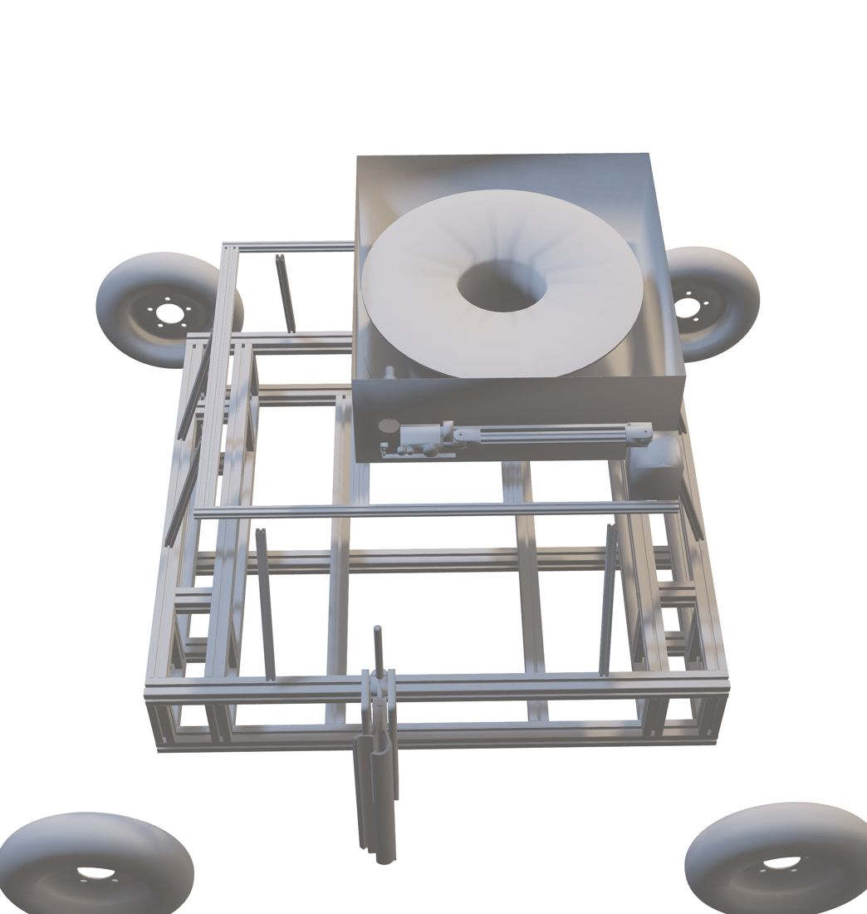
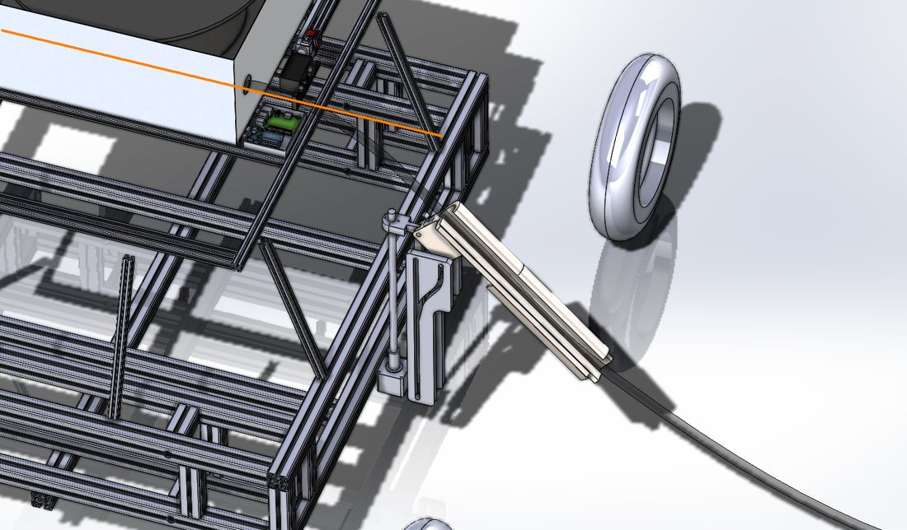
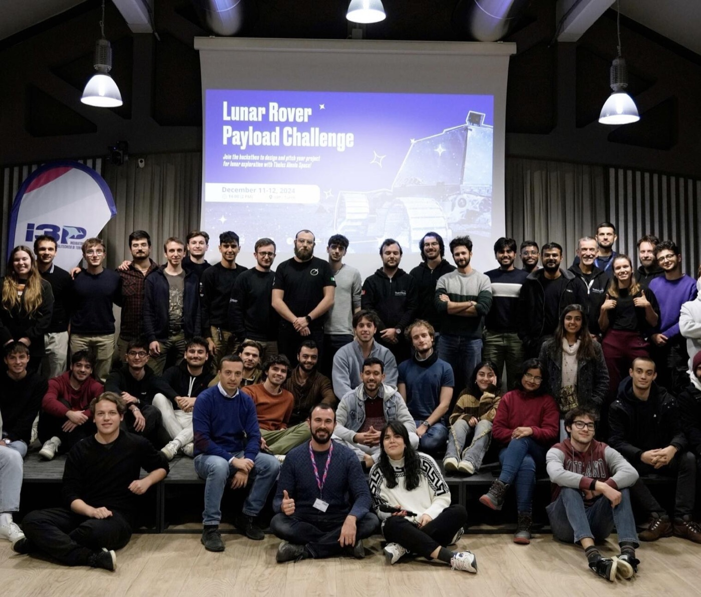

A payload for Thales Alenia Space's rover
Each team acted as an engineering company proposing a low-cost payload breadboard built from COTS parts.
In the first edition of Thales Alenia Space's Lunar Rover Payload Challenge, each team acted as an engineering company proposing one payload for a lunar rover mission. The payload had to be a low-cost breadboard, built from COTS components and rapid prototyping, that could be mounted and tested on the company's rover prototype.
Each team pitched its design to the company in 10 minutes. Proposals were judged on technical validity (50%), innovation (30%) and presentation (20%).
Burying cables between lunar bases
The payload plugs a cable into one facility, buries it in the regolith while the rover drives, and connects it to the next.
A lunar outpost needs to connect its facilities — power plants, habitats, antennas — with power or optical-fibre cables. Laid on the surface, cables are exposed to extreme temperature swings, micrometeorites, dust and the traffic of rovers and landers. Our payload lets the rover plug a cable into one facility, bury it in the regolith while driving, and connect it to the next.
- Thermal stability: just below the surface, temperature varies far less than on top, which we backed with published lunar subsurface temperature data.
- Protection: shielding from radiation, micrometeorite impacts and debris, and less signal interference for data cables.
- Safe operations: no cables in the way of rover or lander activity.
Spool, arm and plow
The payload uses two of the rover's hosting slots and is driven by a Raspberry Pi and an Arduino.
What each slot holds:
- Upper deck: an aluminium casing holding a composite cable spool, plus a 4-degree-of-freedom robotic hand that grips the cable and pushes the connector into the facility's outlet. A wide-angle camera on the arm sees both the hand and the plow. A Raspberry Pi and an Arduino UNO drive five stepper motors (NEMA 17 and NEMA 24).
- Side slot: a hollow stainless-steel cable plow on a 450 mm ball screw, lowered into the soil at about 3 mm/s by a stepper motor. A vibration motor helps it break through larger debris, and a side door lets the cable pass through.


Operating sequence
- The hand grips the cable and moves it in front of the rover.
- The rover approaches the docking point, computed on the Raspberry Pi from the camera feed, and plugs the connector into the outlet.
- The arm releases the cable, which is guided into the plow.
- The plow lowers and digs into the regolith, burying the cable as the rover drives.
- At the second facility, the same steps run in reverse to connect the other end.
System architecture
Swipe sideways to see the full diagram.
Technical budgets
50 W per manoeuvre, 13 kg and about €1,000 for the prototype.
We estimated the plow drag at about 230 N; the vibration motor lowers it by roughly 5%.
Prototyping and testing plan
A three-week, mostly 3D-printed build, then tests on loose sand over compact soil.
Almost every part can be 3D-printed, so we planned a three-week build covering final design, printing, assembly and software. The first plow prototype would have a PLA core with a steel outer shield.
Testing would cover structural and computational analysis, system integration, socket-plugging and cable-catching tests, and a field test on compact soil under about 10 cm of loose sand, to mimic the dusty top layer and harder subsurface of the Moon.
